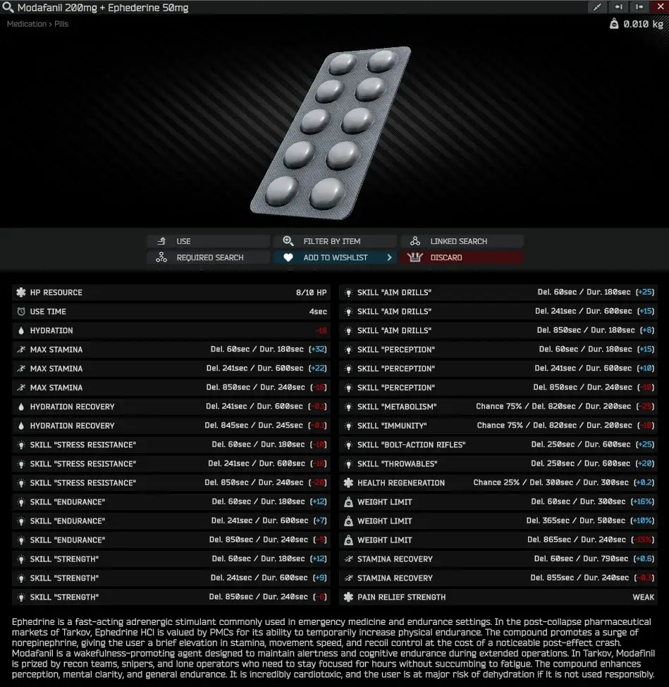
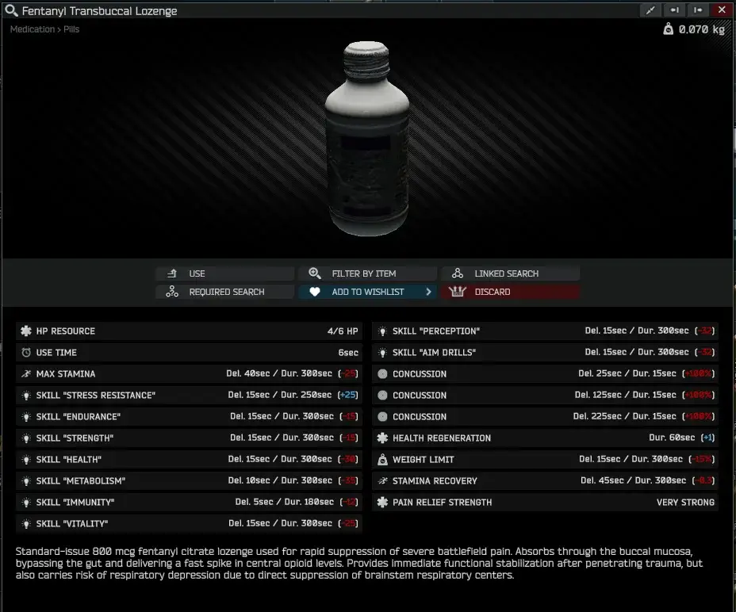
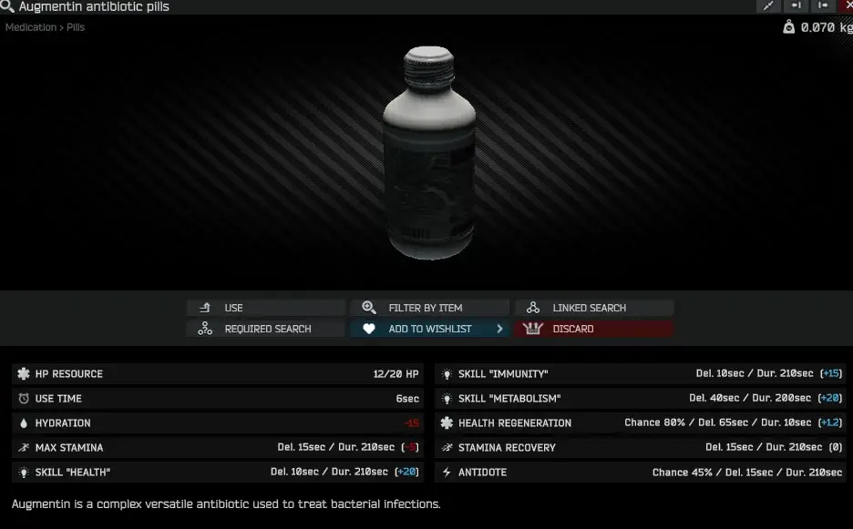
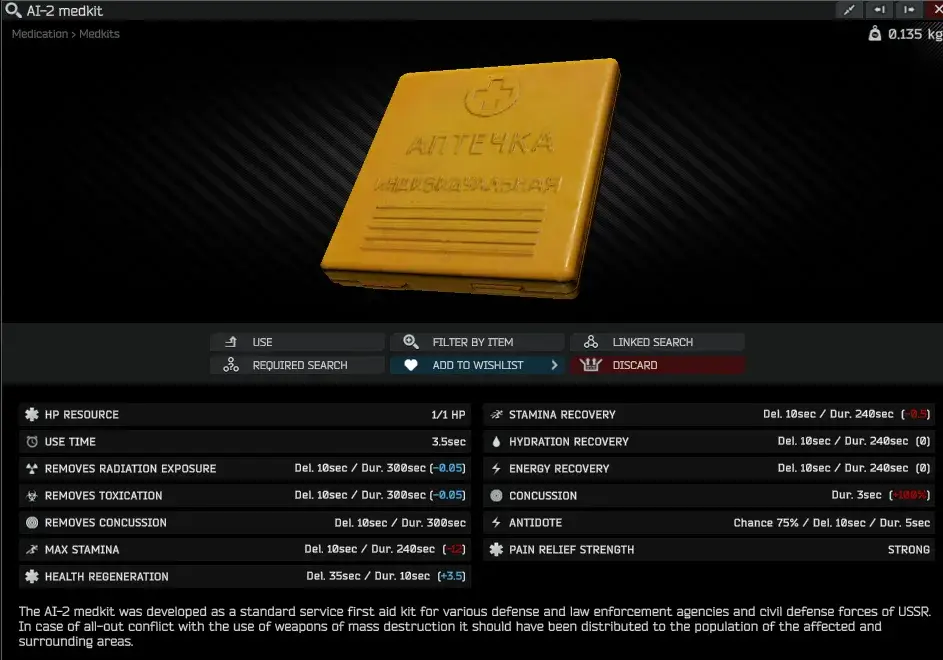
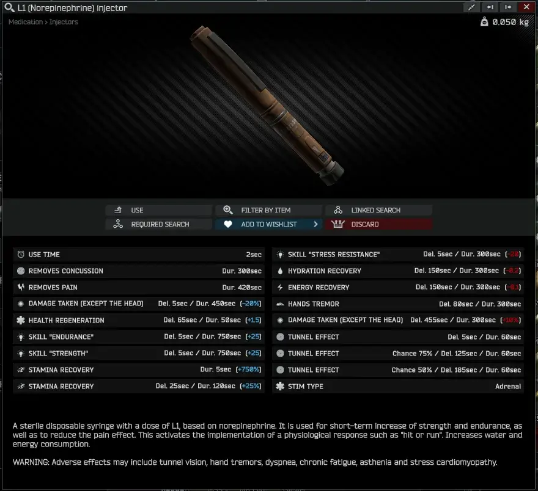
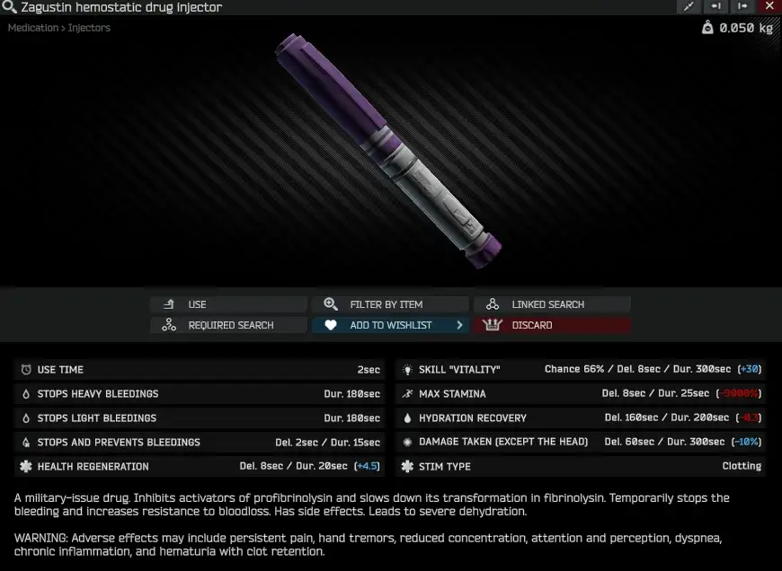
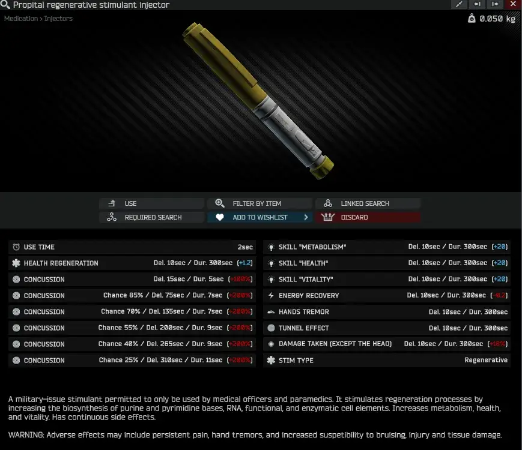

Realism medical tweak
- Downloads
- 8
What started as some personal quality of life changes and general curiosity, eventually turned into a complete overhaul of how consumable medical items are handled in 3.11.4 Realism.
Disclaimer: Some of these changes take a more “arcadey” approach in my attempts to make the more unpopular medical items have some sort of use for MYSELF inside of the game.
More of the medical items now heal you in more indirect ways now too. This is one of the QOL changes that I enjoy a lot but can imagine is not another person’s cup of tea. More on this in detail later.
Changes to pills
- Analgin metamizole tablets is now a combination of adrenergic drugs to provide a prolonged buff to stamina and focus, at the price of gradually dumping your hydration.

- Ibuprofen has been replaced by his steroid abusing coworker: Fentanyl. Similar in efficacy as the original Realisms Morphine injector, with very strong pain relief, but suffering from severe side effects as a result.

- Augmentin is still the clutch antidote we all love, but it also now serves a dual function in blunting certain drug side effects that you intend to curb.

AI-2’s are still the easiest to obtain option for handling any radiation or toxins you might accumulate that will now heal a small portion of health with it as well. Also, you only have one charge per medkit, so I hope you like cheese…. along with other changes.

Surgery kits have gotten big buffs too, Surv Kit now has 20 charges and CMS will have 12. Pure quality of life, with no catch.
Injectors have had big changes made to them as well. It would take too long to go over them all, but I can share a few.
- L1 Norepinephrine will now rapidly regenerate all lost stamina over 7 seconds along with its usual buffs.

- Zagustin will now DUMP all of your current leg stamina for 25 seconds making you unable to sprint for the duration. Only stops bleeds for 15 seconds now, not 150 seconds.

- Propital was too much of a clean stim for being so easily accessible, so it got nerfed for other healing stims to compete.

About Healing
Healing has been given to additional items. Here is a breakdown for the non stimulants.
- Ai-2: Delay 35s, 3.5hp for 10s
- Fentanyl lozenge (Ibuprofen): No Delay, 1hp for 60s
- Augmentin: 80% Chance, Delay 65s, 1.2hp for 10s
- Modafanil (Analgin): 25% Chance, Delay 300s, 0.15 hp for 300s
Version
1.0.0
MedTweak